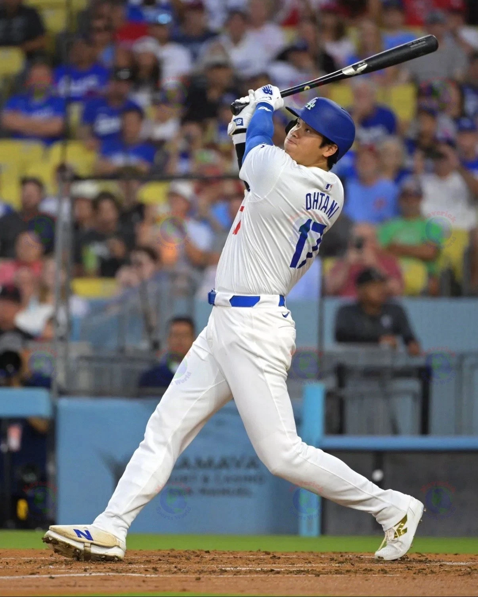
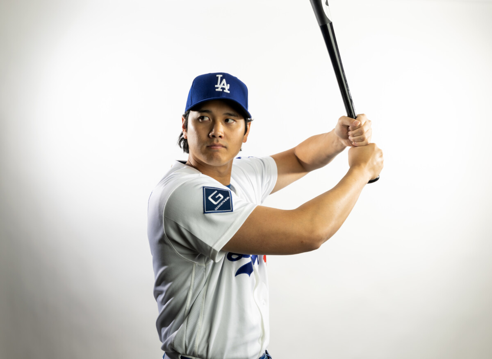

スイングの質と打席の結果を2つのスコアで分けて追跡することで、「運」と「実力」を区別した打撃状態の継続観察を可能にします。
5/16時点でスイング内容スコアは64→71と「要注意」ゾーン内ながら回復基調、打席結果スコアは73→78と「安定」圏内に入りました。バレル率の精度低下など内容面の課題はまだ残るものの、復調の兆しが見え始めたフェーズです。内容スコアが73を超えて「安定」入りするかが当面の見どころです。
大谷翔平の打撃状態を、「スイングの内容」と「打席の結果」の2つのスコアで分けて継続追跡する個人分析ツールです。
打率や成績だけを追うと、短期間では「運」の影響を受けやすく、実態とかけ離れた判断になることがあります。
このツールは、2つのスコアの乖離を可視化することで、「内容は維持されているのに結果が出ていない」「逆に内容が崩れているのに結果だけ出ている」という変化を数値で追えるようにしています。
ざっくり言うと「どれだけ正確にスイングできているか」の目安です。
以下の6つの側面を組み合わせて計算しています。大谷本人の2022〜2025年の150球ローリング窓を基準にしたとき、「今の状態が大谷本人の平常水準とどれくらい違うか」を0〜100に変換したものです。
| 見ている側面 | 見方 | 平均（22–25 rolling 窓平均） |
|---|---|---|
| チェイス率ボール球に手を出す割合 | 低いほど良い ↓ Lower | 28%Chase Rate |
| Z-Swing%ストライクゾーン内へのスイング率 | 高いほど良い ↑ Higher | 71%Zone Swing |
| コンタクト率スイングして当たる割合 | 高いほど良い ↑ Higher | 73%Contact |
| hard_hit%フェアボールのうち打球速度95mph以上の割合 | 高いほど良い ↑ Higher | 55%Hard Hit |
| SweetSpot%フェアボールのうち打球角度8〜32°の割合 | 高いほど良い ↑ Higher | 38%Sweet Spot |
| Barrel%フェアボールのうちバレル判定の割合 | 高いほど良い ↑ Higher | 20%Barrel |
3ゾーン構成。中央付近のマーカーが大谷本人の平常水準です。
80前後が大谷にとっての「ふつう」のスコアです。「80点だから特別良い」という意味ではなく、これが平常水準です。

ざっくり言うと「打席の結果がどれくらい出ているか」の目安です。
wOBA（加重出塁率）という指標を使っています。wOBAは、単打・二塁打・本塁打・四球などをそれぞれの価値に応じて重み付けした指標で、OPSより少し精緻に打席の成果を測れます。
スイング内容スコアと同じように、大谷本人の過去のデータを基準にして0〜100に変換しています。
単打・二塁打・本塁打・四球などを、それぞれの得点価値で重み付けした打撃指標。OPSと比べて、各イベントの価値をより正確に反映します。
毎回の投稿に添えている補足文は、この組み合わせをわかりやすく言い換えたものです。
本当に良い状態のひとつ。スイングの質も結果も伴っており、シーズン中で最も充実したフェーズ。
結果がまだついていない。過去の傾向では改善しやすいケース（参考）。
結果が先行している。内容の推移を注意して見たいフェーズ。
本来の水準を下回っている。立て直しに注目するフェーズ。

スコアは傾向を見るためのものであり、公式統計ではありません。誤りや見落としがある可能性があります。
シーズン序盤（10〜20試合程度）の数値は変動が大きく、参考程度にとどめてください。試合数が積み上がるほど、傾向としての精度は安定します。
* このページは草案をもとにした公開用の初版です。今後、表現や説明を調整する場合があります。